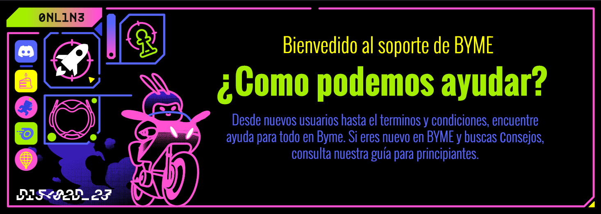

No tienes ningun mensaje.
Cuando llegue tu primer mensaje, recibiras una notificacion.
Configuracion
Perfil
Terminos
Comunidad

Guia para principiantes
Como comenzar en Byme, configuracion para transmisiones
y preguntas frecuentes
Comunidades
Como unirte a una nueva comunidad y como administrar
una ya existente.
Anuncios y eventos
Puedes estar al pendiente de anuncios sobre actualizaciones y administrar los eventos en los que puedes participar con tu comunidad
Mas informacion
Social, consultas, sugerencias y reportes
Términos y Acuerdo
Pautas de la comunidad, términos de servicios, etc.
Byme cast
Ten una mejor experiencia con nuestra herramienta de streaming